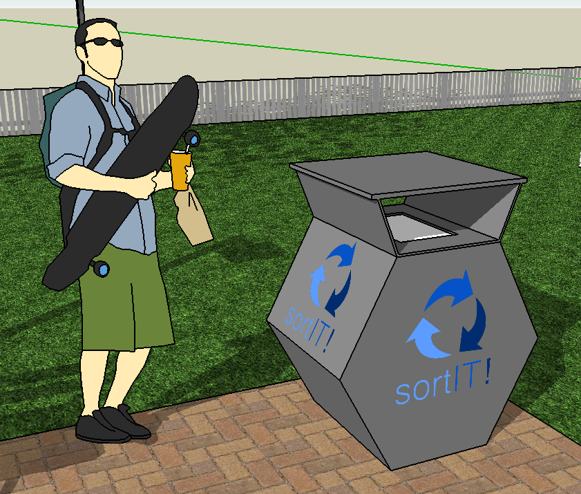

Hrvatska
Stanovnici: 4 407 000
Otpad po stanovniku: 404 kg/g.
Komunalni otpad: 1 723 868 t/g.
Recikliranje: 14%
Otpad po stanovniku: 404 kg/g.
Komunalni otpad: 1 723 868 t/g.
Recikliranje: 14%
vs.
Slovenija
Stanovnici: 2 052 000
Otpad po stanovniku: 414 kg/g.
Komunalni otpad: 852 075 t/g.
Recikliranje: 55%
Otpad po stanovniku: 414 kg/g.
Komunalni otpad: 852 075 t/g.
Recikliranje: 55%
Splitsko-dalamatinska županija i otpad
Postojeći sustav gospodarenja otpadom u Splitsko-dalmatinskoj županiji još uvijek nije u potpunosti usklađen sa zakonskim odredbama.
Djelatnost prikupljanja otpada u Splitsko-dalmatinskoj županiji obavlja trideset komunalnih poduzeća.
Najveću količinu mješovitog komunalnog otpada u Splitsko-dalmatinskoj županiji u 2012. godini prikupila je Čistoća d.o.o. Split, 42%.
Otpad se odlaže na 15 službenih odlagališta na području Splitsko-dalmatinske županije, dok se otpad općine Gradac prevozi na odlagalište Lovornik u Dubrovačko-neretvanskoj županiji.
Trenutno se biorazgradivi komunalni otpad ne sakuplja odvojeno.
SortIT!

Spremnik za recikliranje otpada sortit pomoću umjetne inteligencije i novih tehnologija razvrstava sve vrste otpada bez obzira na ljudski nemar. Razvili su ga Duje Štolfa i Antonio Nikolić, učenici III. gimnazije Split.
Zero Waste trend
Zero waste trend novi je trend među ekolozima. Glavni cilj ovog trenda nije određivati kako gospodariti otpadom, nego spriječiti da on uopće nastane.
Na razini pojedinca, fokusira se na izbacivanje kupovanja proizvoda s ambalažom koja se ne može prenamijeniti, zatim potaknuti ponovnu upotrebu ili prenamjenu raznih nerazgradivih materijala ili proizvoda, potaknuti kompostiranje organskog smeća, kao i osvijestiti reciklažu općenito.
Na razini društva, zero waste trend želi potaknuti da se rekonstruira cjelokupni proizvodni i distribucijski sustav kako bi se smanjio otpad na globalnoj razini. Tako bi se i štitio okoliš i smanjivali troškovi zbrinjavanja otpada, ali i proizvodnje.
Više o tome pročitajte ovdje.
Na razini pojedinca, fokusira se na izbacivanje kupovanja proizvoda s ambalažom koja se ne može prenamijeniti, zatim potaknuti ponovnu upotrebu ili prenamjenu raznih nerazgradivih materijala ili proizvoda, potaknuti kompostiranje organskog smeća, kao i osvijestiti reciklažu općenito.
Na razini društva, zero waste trend želi potaknuti da se rekonstruira cjelokupni proizvodni i distribucijski sustav kako bi se smanjio otpad na globalnoj razini. Tako bi se i štitio okoliš i smanjivali troškovi zbrinjavanja otpada, ali i proizvodnje.
Više o tome pročitajte ovdje.